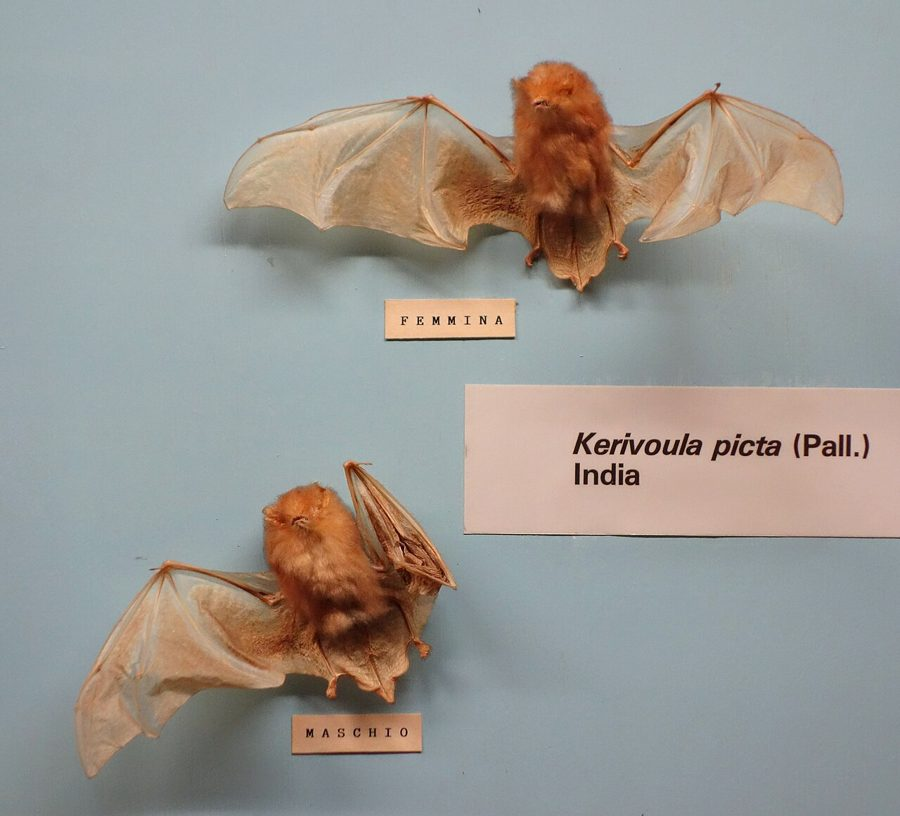

पेंटेड बैटPainted Bat
Kerivoula picta · Vespertilionidae · MAM-0047

- Scientific name वैज्ञानिक नाम
- Kerivoula picta (Pallas, 1767)
- Family कुल
- Vespertilionidae
- Hindi हिंदी
- पेंटेड बैट
- Local names स्थानीय नाम
- painted bat, chittidar chamgadar
- Status here यहाँ की स्थिति
- native
- Movement आवागमन
- Resident, here all year
- Known from कहाँ दर्ज
- Others have published records from the wider Awadh–Purvanchal plain, none yet from Basti–Ayodhya अवध–पूर्वांचल से दूसरों के प्रकाशित अभिलेख, बस्ती–अयोध्या से अभी नहीं
- IUCN IUCN
- NT
- Review समीक्षा
- not yet reviewed
When to look कब देखें
Present all year. साल भर मौजूद।
Tell it apart from इनसे अलग पहचानें
पेंटेड बैट / Painted Bat
Kerivoula picta (Pallas, 1767) — Vespertilionidae
पेंटेड बैट — चमकीले नारंगी और काले रंग के पंखों वाला एक विशिष्ट और सुंदर चमगादड़। इसके पंखों पर नारंगी पट्टियां और उंगलियों के बीच काला रंग होता है। ब्लैनफ़ोर्ड (1888) के अनुसार यह अक्सर केले के पेड़ों (प्लांटेन) पर पाया जाता है। वन्यजीव (संरक्षण) अधिनियम के तहत यह एक संरक्षित प्रजाति है।
Quick Identification त्वरित पहचान
| Feature | Description |
|---|---|
| Build & Size | Small delicate vespertilionid bat; very small size, ear from crown outside 0.4 inches (Blanford 1888) |
| Fur Colour | Fur deep orange or bright ferruginous above, yellower and paler below (Blanford 1888) |
| Wing Coloration | Black with orange spots, orange along fingers and margin of forearm (Blanford 1888) |
| Ears | Moderately long, bluntly but distinctly pointed, reaching halfway to muzzle (Blanford 1888) |
| Day Roost | Said to be often found on plantain trees (Blanford 1888) |
Field tip: Look for an unmistakable small bat with vivid orange fur and variegated black-and-orange wings; said to be often found on plantain trees (Blanford 1888, p. 340).
हिंदी:
यह अपने चमकीले नारंगी शरीर और काले-नारंगी पंखों से तुरंत पहचाना जाता है। इसके कान मध्यम और ट्रैगस लंबा व नुकीला होता है।
Morphology आकारिकी
Dimensions given by Blanford (1888, p. 340) for the Painted Bat:
| Measurement | Range |
|---|---|
| Ear from crown outside | 0.4 inches (Blanford 1888) |
Blanford (1888, p. 339) described the striking coloration: "Colour of fur above deep orange or bright ferruginous, below yellower and paler, the hairs the same tint throughout; ears, antebrachial and interfemoral membranes deep orange; wing-membranes black with orange spots, except along both sides of each finger, the margin of the forearm, and along the body, where the colour is orange."
Blanford (1888, p. 339) described the external structure: "Ears moderately long, reaching when laid forward to halfway between the eye and the muzzle, bluntly but distinctly pointed, broad; ..."
Tragus is very long, narrow, and acutely pointed.
Vocalisations
Not available in consulted sources.
हिंदी:
ब्लैनफ़ोर्ड (1888) के अनुसार इसके कान की ऊंचाई 0.4 इंच होती है। इसका शरीर गहरा नारंगी या लाल-भूरा होता है और पंखों पर उंगलियों के साथ नारंगी पट्टियां तथा बीच में काला रंग होता है। परामर्शित स्रोतों में आवाजों का कोई विवरण उपलब्ध नहीं है।
Behaviour & Ecology व्यवहार और पारिस्थितिकी
Blanford (1888, p. 340) recorded the habits: "This very richly-coloured bat is said to be often found on plantain trees (Musa), and its Cingalese name ... means plantain bat. When disturbed in the daytime, C. picta looks, as Jerdon remarks, more like a large butterfly than a bat."
हिंदी:
ब्लैनफ़ोर्ड (1888) के अनुसार यह अक्सर केले के पेड़ों (प्लांटेन) पर पाया जाता है। दिन में उड़ने पर यह जर्डन के अनुसार एक बड़ी तितली जैसा दिखता है।
Life Cycle / Phenology जीवन चक्र
Not available in consulted sources.
हिंदी:
परामर्शित ऐतिहासिक स्रोतों में इसके जीवन चक्र का विस्तृत विवरण उपलब्ध नहीं है।
Host Plants or Prey आहार
Not available in consulted sources.
हिंदी:
परामर्शित स्रोतों में इसके आहार का विशिष्ट विवरण उपलब्ध नहीं है।
Predators / Natural Enemies शत्रु
Not available in consulted sources.
हिंदी:
परामर्शित स्रोतों में प्राकृतिक शत्रुओं का कोई विवरण उपलब्ध नहीं है।
Agricultural / Human Relevance कृषि प्रासंगिकता
Conservation legal status: Protected under the Wildlife (Protection) Act, 1972.
हिंदी:
यह वन्यजीव (संरक्षण) अधिनियम, 1972 के तहत संरक्षित है।
Expected Locally स्थानीय रूप से अपेक्षित
Not a field record. Written from published accounts for eastern Uttar Pradesh. No confirmed local sighting yet — if you have seen it, that is what the atlas needs.
अभी तक स्थानीय पुष्टि नहीं। यह विवरण प्रकाशित स्रोतों से है, किसी अवलोकन से नहीं।
GBIF holds published records from the wider plain: one photograph, Lakhimpur Kheri, 11 November 2017 (iNaturalist 231787957), with coordinates blurred. A photograph with place and date would constitute a first record for the atlas.
हिंदी:
लखीमपुर खीरी से 11 नवंबर 2017 का एक फोटोग्राफिक रिकॉर्ड (iNaturalist 231787957) मौजूद है जिसके निर्देशांक धुंधले किए गए हैं। बस्ती या अयोध्या से कोई रिकॉर्ड नहीं है। स्थान और तारीख के साथ एक फोटो एटलस के लिए पहला रिकॉर्ड होगी।
Distribution वितरण
Global range: Blanford (1888, pp. 339–340) noted: "Widely distributed in India, Ceylon, and Burma, being recorded from Sikhim, Calcutta, Dacca, Jeypore, Bombay, Madras and the Malabar coast, Ceylon, where it appears to be common, and Burma. Rare in the drier parts of India."
In India: Recorded from several parts of the peninsula and eastern India as quoted above.
In Uttar Pradesh: One photograph, Lakhimpur Kheri, 11 November 2017 (iNaturalist 231787957), with coordinates blurred.
In Basti district / eastern UP: GBIF holds no record from Basti or Ayodhya.
हिंदी:
ब्लैनफ़ोर्ड (1888) के अनुसार यह ओरिएंटल क्षेत्र के अधिकांश भागों में पाया जाता है और भारत के सूखे भागों में दुर्लभ है। उत्तर प्रदेश में लखीमपुर खीरी से एक फोटोग्राफिक रिकॉर्ड है, जबकि बस्ती और अयोध्या से कोई रिकॉर्ड नहीं है।
Research Questions शोध प्रश्न
- What foliage types in rural orchards offer suitable roosting substrate as described historically by naturalists? / ग्रामीण बागों में कौन से पत्ते प्राकृतिक वास के लिए उपयुक्त आश्रय प्रदान करते हैं?
- What factors account for the rarity of Kerivoula picta in northern alluvial districts? / उत्तरी मैदानी जिलों में इस चमगादड़ की दुर्लभता के क्या कारण हैं?
- How does the distinctive coloration function in natural roost environments?
- What daylight roosting microclimates are selected by foliage-roosting bats during monsoon periods?
- How can community awareness among orchard workers assist in reporting opportunistic sightings?
हिंदी:
1. ग्रामीण बागों में कौन से पत्ते प्राकृतिक वास के लिए उपयुक्त आश्रय प्रदान करते हैं?
2. उत्तरी मैदानी जिलों में इस चमगादड़ की दुर्लभता के क्या कारण हैं?
Similar Species मिलती-जुलती प्रजातियाँ
| Species | How to tell apart | हिंदी | |
|---|---|---|---|
| [[lesser_asiatic_yellow_house_bat | Lesser Asiatic Yellow House Bat]] (Scotophilus kuhlii) | Larger size; uniform yellowish-brown upperparts and plain dark wing membranes | छोटा पीला घर चमगादड़ |
| [[indian_pipistrelle | Indian Pipistrelle]] (Pipistrellus coromandra) | Dark brown coat; plain dusky wings; flickering flight around street lamps | चमगादड़ी |
| [[least_pipistrelle | Least Pipistrelle]] (Pipistrellus tenuis) | Dull brownish-grey fur; plain wings; very small build | लीस्ट पिपिस्ट्रेल |
Field rule: Deep orange or bright ferruginous fur, and black wing-membranes with orange along both sides of each finger, the margin of the forearm and the body (Blanford 1888, p. 339).
Taxonomy & Classification वर्गीकरण
Original description. Described by Peter Simon Pallas in 1767 in Spicilegia Zoologica (fasc. 3, p. 7), under the basionym Vespertilio pictus, from peninsular India.
Subspecies. Monotypic. Treated by W. T. Blanford (1888, p. 339) under Kerivoula picta, "The painted Bat".
Family and order placement. Order Chiroptera, family Vespertilionidae, genus Kerivoula.
Phylogenetic notes. Not available in consulted sources.
IUCN status rationale. Evaluated as Near Threatened (NT) on the IUCN Red List (Huang et al. 2020).
हिंदी:
पीटर साइमन पलास ने 1767 में इसका वर्णन किया था। डब्लू. टी. ब्लैनफ़ोर्ड (1888) ने इसे 'केरीवूली पिक्टा' के रूप में दर्ज किया। आईयूसीएन रेड लिस्ट में इसे 'संकट-निकट' (Near Threatened) माना गया है।
Photo Gallery फोटो गैलरी
No photos yet — add field photos to media/species/painted_bat/ and run node scripts/sync_photos.js.
Photos needed आवश्यक फोटो
- [ ] Individual roosting in foliage showing orange and black wing pattern (पत्तियों में विश्राम करता हुआ चमगादड़)
- [ ] Ventral view showing orange fur coloration (निचले हिस्से का नारंगी रोएं वाला दृश्य)
References संदर्भ
- Pallas, P. S. (1767). Spicilegia Zoologica, quibus novae imprimis et obscurae animalium species... Fasciculus 3. G. A. Lange, Berolini, p. 7 (as Vespertilio pictus).
- Blanford, W. T. (1888). The Fauna of British India, Including Ceylon and Burma. Mammalia. Part I. Taylor & Francis, London, pp. 339–341 (as Kerivoula picta).
- Bates, P. J. J. & Harrison, D. L. (1997). Bats of the Indian Subcontinent. Harrison Zoological Museum, Sevenoaks.
- Menon, V. (2014). Indian Mammals: A Field Guide. Hachette India, Gurgaon.
- Huang, J. C.-C., Lim, L. S. & Chakravarty, R. (2020). Kerivoula picta. The IUCN Red List of Threatened Species 2020: e.T10985A22022952. doi:10.2305/IUCN.UK.2020-2.RLTS.T10985A22022952.en
- GBIF Occurrence Data — Kerivoula picta, India (2025).
Source file: species/fauna/mammals/painted_bat.md